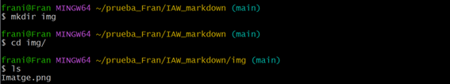
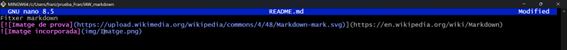
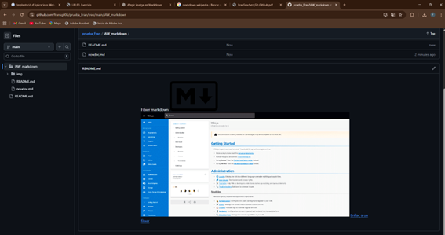
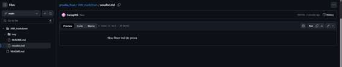

Pràctica d'introducció a MarkDown
Crea una carpeta en un repositori local (creat en l’exercici anterior) que s’anomene IAW_markdown, que incloga un fitxer README.md.

Afegeix contingut al fitxer README.md utilitzant tots els elements de la sintaxi de Markdown que hem recordat.
Entre altres inclou:
Una imatge al document que siga un enllaç a una URL externa.

Crea un directori anomenat img al repositori i afegeix una imatge.

Incorpora la imatge que has afegit dins del document.



Crea un nou document markdown al repositori.

Crea un enllaç des del fitxer README.md al nou document que acabes de crear.




Generar un document .pdf a partir del fitxer README.md.